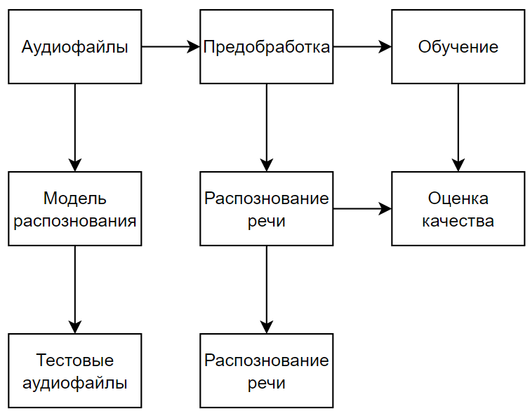
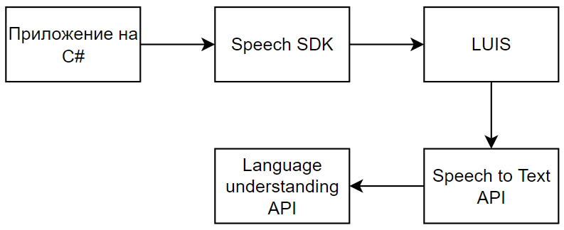
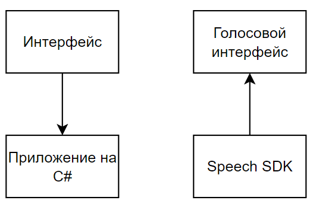
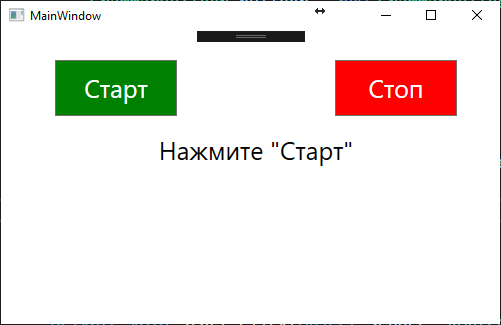
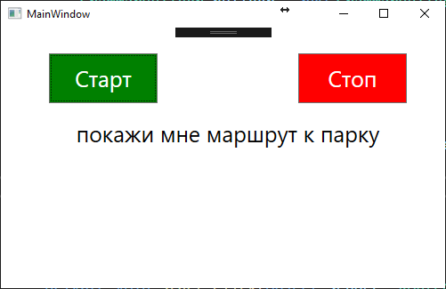
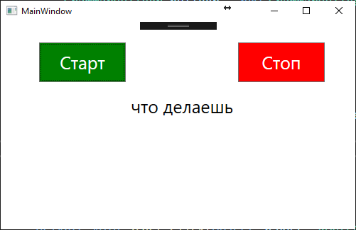
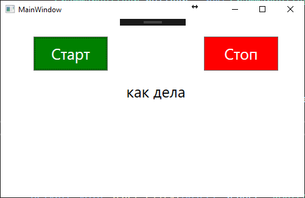

Назад в библиотеку УДК 004.42
Разработка приложения для распознавания речи
Я.В. Приляпа*1, О.В. Рычка*2
*1 студент, Донецкий национальный технический университет,
*2 ст. преподаватель, Донецкий национальный технический университет,
olga_rychka@mail.ru
Приляпа Я.В., Рычка О.В. Разработка приложения для распознавания речи. Статья посвящена технологии распознавания речи в реальном времени и ее применению в различных сферах жизни и деятельности. В статье рассмотрены основные подходы, методы и факторы, которые влияют на качество и скорость распознавания речи. В статье также показано, как можно создать тестовое приложение для распознавания речи на основе Microsoft Speech API, которое позволяет пользователю диктовать команды на русском языке и видеть их текстовое представление на экране. В статье описаны основные функциональные требования к приложению. В статье также рассмотрены способы улучшения качества распознавания речи с помощью модели адаптации, которая позволяет увеличить вероятность распознавания определенных слов или фраз. Также приведён пример интерфейса системы.
Ключевые слова: распознавание речи, нейронные сети, скрытые марковские модели.
Введение
Распознавание речи в реальном времени - это процесс преобразования звукового сигнала в текстовый формат по мере его поступления. Это позволяет общаться с компьютерами, голосовыми помощниками, переводчиками и другими приложениями с помощью естественного языка. Распознавание речи в реальном времени имеет множество преимуществ для разных категорий пользователей:
Для людей с ограниченными возможностями распознавание речи в реальном времени может облегчить доступ к информации, образованию и развлечениям. Например, слабослышащие люди могут использовать распознавание речи для получения субтитров к фильмам или телефонным разговорам. Слепые люди могут использовать распознавание речи для управления своими устройствами или чтения текста.
Для бизнеса распознавание речи в реальном времени может повысить эффективность, качество работы и удовлетворенность клиентов. Например, колл-центры могут использовать распознавание речи для автоматизации обработки звонков, анализа настроения клиентов и контроля качества обслуживания. Маркетологи могут использовать распознавание речи для создания уникального голоса бренда и персонализации коммуникации с потребителями.
Для образования и науки распознавание речи в реальном времени может способствовать развитию навыков и знаний. Например, студенты могут использовать распознавание речи для диктовки лекций, записи заметок или изучения иностранных языков. Ученые могут использовать распознавание речи для транскрибирования интервью, экспериментов или конференций.
Распознавание речи в реальном времени основано на сложных алгоритмах машинного обучения, которые анализируют звуковой сигнал на разных уровнях: от отдельных звуков до слов и фраз. Существуют разные подходы к распознаванию речи, такие как скрытые марковские модели, нейронные сети или комбинации этих методов. Для улучшения качества распознавания речи необходимо учитывать разные факторы, такие как шум, акцент, скорость или контекст говорящего.
Целью работы является разработка доступной и удобной системы для распознавания речи.
Обзор существующих систем распознавания речи
В настоящее время на рынке существует множество систем распознавания речи, которые предлагают различные функции и возможности для пользователей. Некоторые из них являются общего назначения, а некоторые специализируются на определенных областях или языках. В этом разделе мы рассмотрим некоторые из наиболее популярных и известных систем распознавания речи и сравним их по следующим критериям: точность, скорость, удобство использования, стоимость и доступность. В таблице 1 приведём характеристику каждой системы.
Таблица 1 – Сравнительная характеристика
Система |
Google Speech-to-Text |
Microsoft Speech Services |
IBM Watson Speech to Text |
Яндекс.Распознавание |
Amazon Transcribe |
Количество поддерживаемых языков и диалектов |
Более 120 |
Более 80 |
Более 10 |
русский, английский, турецкий и украинский |
Более 30 |
Используемая технология |
Нейронные сети |
Нейронные сети |
Нейронные сети |
Нейронные сети |
Нейронные сети |
Учет контекста и семантики |
Да |
Да |
Да |
Да |
Да |
Распознавание эмоций и тональности |
Нет |
Да |
Нет |
Нет |
Нет |
Распознавание специфических терминов и жаргона |
Нет |
Нет |
Да |
Нет |
Да |
Режимы работы |
Реального времени или с предварительно записанными файлами |
Реального времени или с предварительно записанными файлами |
Реального времени или с предварительно записанными файлами |
Реального времени или с предварительно записанными файлами |
Реального времени или с предварительно записанными файлами |
Опции для персонализации настройки |
Различные |
Различные |
Различные |
Различные |
Различные |
Доступность |
Облачный сервис или локальное приложение |
Облачный сервис или локальное приложение |
Облачный сервис или локальное приложение |
Облачный сервис или локальное приложение |
Облачный сервис или локальное приложение |
Стоимость |
Бесплатна для небольших объемов данных, но требует оплаты за большие объемы или дополнительные функции[1] |
Бесплатна для небольших объемов данных, но требует оплаты за большие объемы или дополнительные функции[2] |
Бесплатна для небольших объемов данных, но требует оплаты за большие объемы или дополнительные функции[3] |
Бесплатна для небольших объемов данных, но требует оплаты за большие объемы или дополнительные функции |
Бесплатна для небольших объемов данных, но требует оплаты за большие объемы или дополнительные функции |
Из сравнения этих систем распознавания речи можно сделать следующие выводы:
Все системы используют нейронные сети для анализа звукового сигнала и преобразования его в текст, что обеспечивает высокую точность и скорость распознавания.
Все системы учитывают контекст и семантику речи, что повышает их понимание и адаптацию к разным ситуациям и темам.
Все системы поддерживают разные языки и диалекты, что расширяет их применимость к разным группам пользователей.
Все системы предлагают различные опции для персонализации и настройки системы под конкретные нужды пользователя, что увеличивает их удобство использования.
Все системы доступны как облачный сервис или как локальное приложение, что обеспечивает безопасность и доступность данных.
Все системы бесплатны для небольших объемов данных, но требуют оплаты за большие объемы или дополнительные функции. Однако существуют и некоторые различия между этими системами, которые могут влиять на выбор пользователя в зависимости от его целей и предпочтений. Например, Google Speech-to-Text имеет самый широкий выбор языков и диалектов, но также имеет самые высокие цены за большие объемы данных. Microsoft Speech Services имеет самую продвинутую функцию распознавания эмоций и тональности речи, но также имеет самые строгие ограничения на размер и длительность файлов. IBM Watson Speech to Text имеет самую глубокую специализацию по отраслям и областям знаний, но также имеет самую низкую скорость распознавания. Яндекс.Распознавание имеет самую высокую точность для русского языка, но также имеет самую ограниченную поддержку других языков. Amazon Transcribe имеет самую гибкую настройку и персонализацию системы, но также имеет самую сложную интеграцию с другими сервисами.
Таким образом, можно сказать, что каждая из рассмотренных систем распознавания речи имеет свои сильные и слабые стороны, а выбор оптимальной системы зависит от конкретных потребностей и задач пользователя.
Методология разработки системы распознавания речи
В этом разделе мы изложим наш подход к созданию системы распознавания речи на C#, которая удовлетворяет поставленной цели. Мы будем использовать следующие технологии, алгоритмы, модели и инструменты:
.NET 5 SDK: это современный и универсальный фреймворк для разработки приложений на C# и других языках. Он обладает множеством библиотек и инструментов для работы с данными, машинным обучением и обработкой сигналов. Мы будем использовать .NET 5 SDK для написания кода нашей системы и для взаимодействия с другими сервисами и приложениями [4].
Cognitive Services Speech SDK: это один из самых популярных и мощных SDK для работы с речью от Microsoft. Он позволяет легко интегрировать функции распознавания речи, синтеза речи, перевода речи и понимания речи в приложения на C# и других языках. Мы будем использовать Cognitive Services Speech SDK для преобразования звукового сигнала в текст и для определения намерений говорящего [5].
Language Understanding (LUIS): это сервис от Microsoft, который позволяет создавать и обучать модели понимания речи на основе нейронных сетей. Он поддерживает несколько языков и диалектов, а также способен распознавать разговорную речь, акценты и диалекты. Мы будем использовать LUIS для определения намерений говорящего на основе текста, полученного от Cognitive Services Speech SDK [6].
Для иллюстрации нашей методологии мы приведем следующие диаграммы:
Диаграмма потока данных на рисунке 1: она показывает, как наши данные проходят через различные этапы предобработки, обучения и тестирования нашей системы.
Диаграмма архитектуры системы на рисунке 2: она показывает, как наша система распознавания речи состоит из нескольких компонентов и служб, которые выполняют различные функции.
Диаграмма интерфейса системы на рисунке 3: она показывает, как пользователь может взаимодействовать с нашей системой через консольный или графический интерфейс.

Рисунок 1 – Диаграмма потока данных

Рисунок 2 – Диаграмма архитектуры системы

Рисунок 3 – Диаграмма интерфейса системы
Алгоритмы распознавания речи
Для того, чтобы преобразовать звуковой сигнал в текст, наша система использует несколько алгоритмов, которые выполняют различные этапы обработки и анализа речи. В общем виде, эти этапы можно представить следующим образом:
Анализ сигнала
На этом этапе мы применяем различные методы обработки сигналов, такие как фильтрация, усиление, подавление шума и эха, для того, чтобы улучшить качество и четкость звукового сигнала. Это необходимо для того, чтобы уменьшить влияние фоновых шумов и искажений на результат распознавания речи. Для этого мы используем такие алгоритмы, как:
Адаптивный фильтр Винера: это алгоритм, который позволяет подавлять шум в звуковом сигнале на основе статистических свойств сигнала и шума. Он адаптируется к изменению характеристик шума и сигнала во времени и частоте [7].
Алгоритм спектрального вычитания: это алгоритм, который позволяет подавлять шум в звуковом сигнале на основе разности спектров сигнала и шума. Он работает в частотной области и требует оценки спектра шума [8].
Алгоритм эхокомпенсации: это алгоритм, который позволяет подавлять эхо в звуковом сигнале на основе моделирования импульсной характеристики канала передачи. Он работает во временной области и требует адаптации к изменению условий канала [9].
Преимущества анализа сигнала:
- улучшение качества и четкости звукового сигнала
- уменьшение влияния фоновых шумов и искажений на результат распознавания речи
- увеличение точности и надежности распознавания речи
Извлечение признаков
На этом этапе мы преобразуем звуковой сигнал в набор численных характеристик, которые отражают его спектральные и временные свойства. Это необходимо для того, чтобы упростить задачу распознавания речи и выделить наиболее важную информацию из сигнала. Для этого мы используем такие методы, как:
Оконное преобразование Фурье: это метод, который позволяет перевести звуковой сигнал из временной области в частотную область. Он разбивает сигнал на короткие фрагменты (окна) и применяет к ним дискретное преобразование Фурье. Это позволяет получить спектрограмму сигнала - двумерное представление его частотного состава в зависимости от времени [10].
Мел-частотное кепстральное преобразование: это метод, который позволяет получить набор коэффициентов, которые характеризуют форму спектра звукового сигнала. Он применяет к спектрограмме сигнала следующие шаги: логарифмирование амплитуды спектра, применение мел-фильтров для учета нелинейного восприятия частот человеком, обратное дискретное косинусное преобразование для получения кепстра - спектра логарифма спектра. Коэффициенты кепстра называются мел-частотными кепстральными коэффициентами (MFCC) и являются одним из самых распространенных признаков для распознавания речи.
Линейный предсказательный анализ: это метод, который позволяет получить набор коэффициентов, которые характеризуют способность звукового сигнала предсказывать свои будущие значения на основе своих прошлых значений. Он основан на модели авторегрессии, которая представляет сигнал как линейную комбинацию своих предыдущих отсчетов и ошибки предсказания. Коэффициенты авторегрессии называются линейными предсказательными коэффициентами (LPC) и также используются для распознавания речи.
Преимущества извлечения признаков:
- упрощение задачи распознавания речи и выделение наиболее важной информации из сигнала
- уменьшение размерности данных и снижение вычислительной сложности
- учет специфики человеческого восприятия речи и повышение точности распознавания
Распознавание речи: на этом этапе мы сопоставляем набор признаков с набором слов или фраз, которые имеют наибольшую вероятность быть произнесенными. Для этого мы используем такие методы, как динамическое программирование, скрытые модели Маркова и нейронные сети.
Понимание речи: на этом этапе мы определяем намерение говорящего на основе текста, полученного от распознавания речи. Для этого мы используем такие методы, как анализ естественного языка, извлечение сущностей и классификация намерений.
Распознавание речи в реальном времени основано на сложных алгоритмах машинного обучения, которые анализируют звуковой сигнал на разных уровнях: от отдельных звуков до слов и фраз. Существуют разные подходы к распознаванию речи, такие как скрытые марковские модели, нейронные сети или комбинации этих методов. Для улучшения качества распознавания речи необходимо учитывать разные факторы, такие как шум, акцент, скорость или контекст говорящего.
Скрытые марковские модели (HMM) - это один из наиболее распространенных подходов к распознаванию речи. Они основаны на статистической модели, которая описывает вероятность перехода между скрытыми состояниями и вероятность наблюдения определенных признаков в каждом состоянии. Скрытые состояния соответствуют фонемам - минимальным звуковым единицам языка, а признаки - это численные характеристики звукового сигнала. Для распознавания речи используются специальные виды HMM, такие как трифонные модели или модели с пропусками. Они позволяют учитывать контекст и вариативность произношения.
Нейронные сети (NN) - это другой подход к распознаванию речи, который стал популярным в последние годы. Они основаны на математической модели, которая имитирует работу биологических нейронов и их связей. Нейронные сети способны обучаться на больших объемах данных и автоматически извлекать признаки из звукового сигнала. Для распознавания речи используются разные виды NN, такие как сверточные нейронные сети (CNN), рекуррентные нейронные сети (RNN) или трансформеры. Они позволяют учитывать сложную структуру и динамику речевого сигнала.
Комбинации HMM и NN - это третий подход к распознаванию речи, который объединяет преимущества обоих методов. Он заключается в том, что NN используются для оценки вероятностей наблюдения признаков в HMM или для генерации признаков для HMM. Такой подход позволяет повысить точность и скорость распознавания речи за счет лучшего моделирования звукового сигнала и его статистических свойств.
Для улучшения качества распознавания речи необходимо учитывать разные факторы, которые могут влиять на произношение и понимание речи. Например:
1. Шум. Шум может мешать распознаванию речи, так как он затрудняет выделение целевого голоса из фоновых звуков. Шум может быть стационарным, например, шум от кондиционера или двигателя, или нестационарным, например, шум от других говорящих или музыки. Чем больше шума и чем ближе он по спектру к целевой речи, тем сложнее распознать речь.
2. Акцент. Акцент может влиять на распознавание речи, так как он отражает различия в произношении звуков, ударениях и интонации между разными говорящими. Акцент может быть связан с родным языком говорящего, его регионом или социальной группой. Чем больше акцент отличается от стандартного или ожидаемого произношения, тем сложнее распознать речь.
3. Скорость. Скорость может влиять на распознавание речи, так как она определяет длительность и четкость звуков и слов. Скорость может варьироваться в зависимости от эмоций, цели или стиля говорящего. Чем быстрее говорит человек, тем сложнее распознать речь, так как звуки могут сливаться или теряться.
4. Контекст. Контекст может влиять на распознавание речи, так как он помогает понять смысл и значение речи. Контекст может быть связан с темой, ситуацией или задачей говорящего и слушающего. Контекст может помогать угадывать незнакомые или нечеткие слова, а также разрешать неоднозначности или ошибки в речи.
Для улучшения качества распознавания речи необходимо учитывать все эти факторы и применять соответствующие методы и алгоритмы для их компенсации или устранения.
Разработка тестового приложения для распознавания речи
Целью данного приложения является демонстрация возможностей распознавания речи на основе Microsoft Speech API. Это приложение позволит пользователю диктовать команды на русском языке и видеть их текстовое представление на экране. Также это приложение может быть использовано для обучения или тестирования распознавания речи в разных условиях.
Функции, которые будет выполнять приложение, включают:
Инициализация и настройка объекта SpeechRecognitionEngine или SpeechRecognizer для работы с локальным или облачным движком или сервисом распознавания речи.
Загрузка и применение грамматики для распознавания определенных команд или запросов на русском языке.
Установка входного аудиоустройства по умолчанию для захвата звукового сигнала от микрофона пользователя.
Запуск и остановка процесса распознавания речи по нажатию кнопок “Старт” и “Стоп”.
Вывод текста распознанной речи в текстовое поле на экране.
Факторы, которые способствовали разработке приложения, включают:
Рост интереса к технологии распознавания речи и ее применению в разных сферах жизни и деятельности.
Развитие и улучшение движков и сервисов распознавания речи, основанных на статистических моделях и нейронных сетях.
Доступность и простота использования Microsoft Speech API для интеграции функций распознавания речи в приложения для Windows.
Для обучения этого приложения для распознавания слов и предложений на русском языке нужно использовать грамматику и языковой пакет для Microsoft Speech API. Грамматика - это набор правил, которые определяют, какие слова или фразы может распознать приложение. Языковой пакет - это набор файлов, которые содержат модели и словари для определенного языка или диалекта.
Для создания грамматики можно использовать класс Choices, который позволяет добавить список возможных команд или запросов на русском языке. Например:
numbers = new Choices(); numbers.Add(“привет”, “как дела”, “что делаешь”, “покажи мне маршрут к парку”, “назад”);
Для загрузки языкового пакета нужно установить его на компьютере и указать культуру ru-ru при создании объекта SpeechRecognitionEngine или SpeechRecognizer. Например:
sre = new SpeechRecognitionEngine(new CultureInfo(“ru-ru”));
 
 
Рисунок 4 – Интерфейс тестового приложения
Выводы
В этой статье были рассмотрены основные подходы, методы и факторы, связанные с распознаванием речи в реальном времени. Было показано, как можно создать тестовое приложение для распознавания речи на основе Microsoft Speech API и как можно улучшить качество распознавания речи с помощью модели адаптации. Мы также описали библиотеку using Microsoft.Speech.Recognition и ее возможности для работы с разными движками и сервисами распознавания речи. Эта статья будет полезна для тех, кто интересуется технологией распознавания речи и хочет использовать ее в своих приложениях. В заключение отмечу, что распознавание речи - это динамичная и развивающаяся область, которая предлагает много перспектив и вызовов для исследователей и разработчиков.
Литература
1.Распознавание речи // Википедия. - Режим доступа: https://ru.wikipedia.org/wiki/%D0%A0%D0%B0%D1%81%D0%BF%D0%BE%D0%B7%D0%BD%D0%B0%D0%B2%D0%B0%D0%BD%D0%B8%D0%B5_%D1%80%D0%B5%D1%87%D0%B8 - Загл. с экрана.
2.Speech-to-Text // WIPO. - Режим доступа: https://www.wipo.int/about-ip/ru/artificial_intelligence/speech_to_text.html - Загл. с экрана.
3.Как работают системы распознавания речи // Se7en. - Режим доступа: https://se7en.ws/kak-rabotayut-sistemy-raspoznavaniya-rechi/ - Загл. с экрана.
4.Speech Recognition Using C# // C# Corner. - Режим доступа: https://www.c-sharpcorner.com/article/speech-recognition-using-C-Sharp/ - Загл. с экрана.
5.Easy C# Speech Recognition // AssemblyAI. - Режим доступа: https://www.assemblyai.com/blog/easy-c-speech-recognition/ - Загл. с экрана.
6.How to recognize intents from speech (C#) // Microsoft Learn. - Режим доступа: https://learn.microsoft.com/en-us/azure/cognitive-services/speech-service/how-to-recognize-intents-from-speech-csharp - Загл. с экрана.
7.Алгоритмы распознавания речи // Bing. - Режим доступа: https://bing.com/search?q=%d0%b0%d0%bb%d0%b3%d0%be%d1%80%d0%b8%d1%82%d0%bc%d1%8b+%d1%80%d0%b0%d1%81%d0%bf%d0%be%d0%b7%d0%bd%d0%b0%d0%b2%d0%b0%d0%bd%d0%b8%d1%8f+%d1%80%d0%b5%d1%87%d0%b8 - Загл. с экрана.
8.Как работает распознавание речи в Яндексе // Хабр. - Режим доступа: https://habr.com/ru/companies/ashmanov_net/articles/523412/ - Загл. с экрана.
9.Как работает распознавание речи в Google // Хабр. - Режим доступа: https://habr.com/ru/articles/226143/ - Загл. с экрана.
10.Как работает распознавание речи в Nuance // Хабр. - Режим доступа: https://habr.com/ru/post/135087/ - Загл. с экрана.
Приляпа Я.В., Рычка О.В. Разработка приложения для распознавания речи. Статья посвящена технологии распознавания речи в реальном времени и ее применению в различных сферах жизни и деятельности. В статье рассмотрены основные подходы, методы и факторы, которые влияют на качество и скорость распознавания речи, такие как: подходы к распознаванию речи, методы и факторы. В статье также показано, как можно создать тестовое приложение для распознавания речи на основе Microsoft Speech API, которое позволяет пользователю диктовать команды на русском языке и видеть их текстовое представление на экране. В статье описаны основные функциональные требования к приложению. В статье также рассмотрены способы улучшения качества распознавания речи с помощью модели адаптации, которая позволяет увеличить вероятность распознавания определенных слов или фраз. Также приведён пример интерфейса системы.
Ключевые слова: распознавание речи, нейронные сети, скрытые марковские модели.
Balyaba Yana, Rycka Olga. Development of a speech recognition application. The article is devoted to real-time speech recognition technology and its application in various spheres of life and activity. The article discusses the main approaches, methods and factors that affect the quality and speed of speech recognition, such as: approaches to speech recognition, methods and factors. The article also shows how you can create a test application for speech recognition based on the Microsoft Speech API, which allows the user to dictate commands in Russian and see their text representation on the screen. The article describes the main functional requirements for the application. The article also discusses ways to improve the quality of speech recognition using an adaptation model that allows you to increase the probability of recognizing certain words or phrases. An example of the system interface is also provided.
Keywords: speech recognition, neural networks, hidden Markov models.